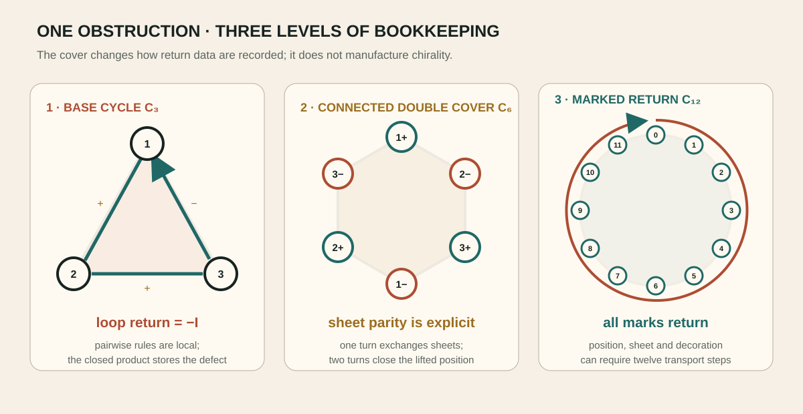
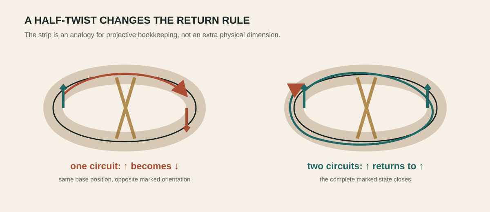
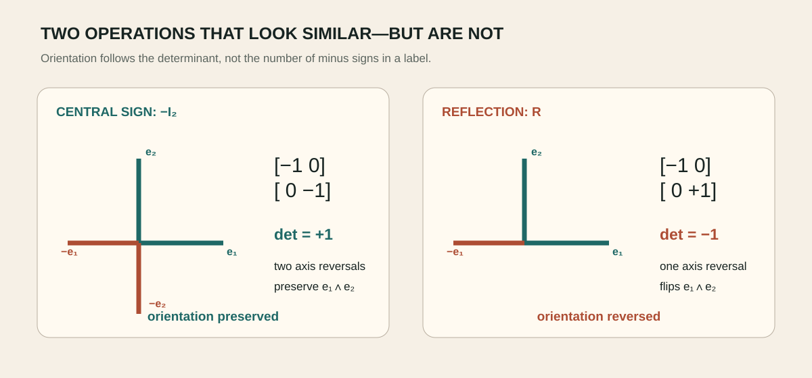
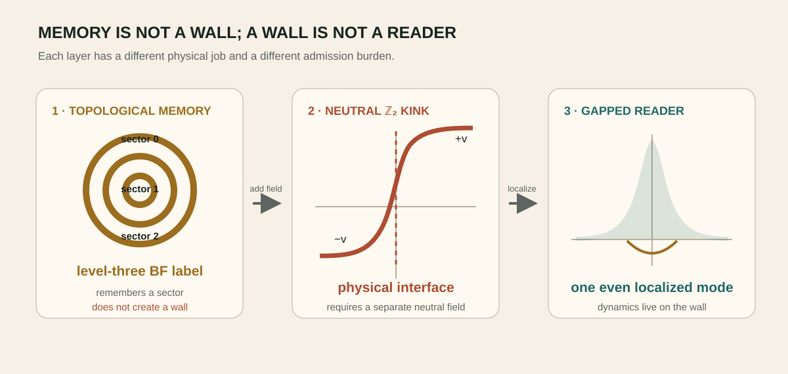

Möbius intuition, double covers and central sign
The projective loop
Status: A stated candidate class or identification has been ruled out under explicit assumptions. Function: checks assumptions, certificates, counterexamples and stopping rules.
The exact result
An odd three-relation cycle can fail to return on the base configuration while closing on a connected double cover. The placement triangle lifts to a six-cycle, and coherent transport can require twelve steps before every marked datum returns.
Expanded claim pageScope · logical anatomy · verification route · boundary · sourcesOpen claim →This is the mathematically disciplined form of the twisted odd-gear intuition: the obstruction lives in projective lifting and holonomy.
Expanded claim pageScope · logical anatomy · verification route · boundary · sourcesOpen claim →
The reversal
The central return −I preserves determinant orientation. It therefore cannot simply be renamed chirality or identified with a Pfaffian-sheet reversal. The negative result is productive: it tells the programme that orientation needs an independently odd datum.
Expanded claim pageScope · logical anatomy · verification route · boundary · sourcesOpen claim →A familiar twisted-loop picture
Write an arrow on a strip of paper, give the strip a half twist, and join the ends. After one circuit the arrow returns reversed; after two it returns fully. A projective double cover records this without pretending that the paper moved through an extra physical dimension.
Expanded claim pageScope · logical anatomy · verification route · boundary · sourcesOpen claim →The programme's three-placement loop behaves similarly. Local transitions can be consistent while their product returns a central sign. Lifting the triangle to a six-cycle makes the sign bookkeeping single-valued, and a twelve-step marked transport can return every decoration.
Expanded claim pageScope · logical anatomy · verification route · boundary · sourcesOpen claim →
Central sign versus handedness
Multiplying every vector by minus one changes its sign but preserves the orientation of an even-dimensional frame. Handedness instead changes under a reflection with negative determinant. This is why a central -I holonomy cannot simply be called chirality.
Expanded claim pageScope · logical anatomy · verification route · boundary · sourcesOpen claim →The distinction is not pedantry. A physical selector must couple to something that actually changes under the proposed exchange. If the candidate datum is even, no amount of suggestive language makes it an orientation source.
Expanded claim pageScope · logical anatomy · verification route · boundary · sourcesOpen claim →
From topology to a defect
A topological label can remember how a loop was prepared, but a localized laboratory mode also needs a place to live. The charge-three Higgs sector has a precise level-three BF limit, yet its apparent phase vacua are gauge copies and cannot make a domain wall. Adding a neutral \(\mathbb Z_2\) field supplies an explicit kink and one localized even bosonic reader.
Expanded claim pageScope · logical anatomy · verification route · boundary · sourcesOpen claim →This cleanly separates memory from hardware: BF theory carries the sector label; the gapped reader carries non-topological dynamics; and the wall's origin remains an external microscopic question.
Expanded claim pageScope · logical anatomy · verification route · boundary · sourcesOpen claim →
Chapter sources
- 994_the_three_placement_triangle_has_a_z2_sideband_frustration_and_requires_path_dependence_or_a_double_cover.md
- 1233_charge_three_abelian_higgs_reduces_conditionally_to_level_three_bf_and_a_gapped_unit_charge_reader_can_coexist_only_as_non_topological_memory.md
- 1292_a_neutral_z2_kink_is_the_minimal_defect_origin_and_one_even_charge_one_boson_localizes_without_mirror_doubling.md